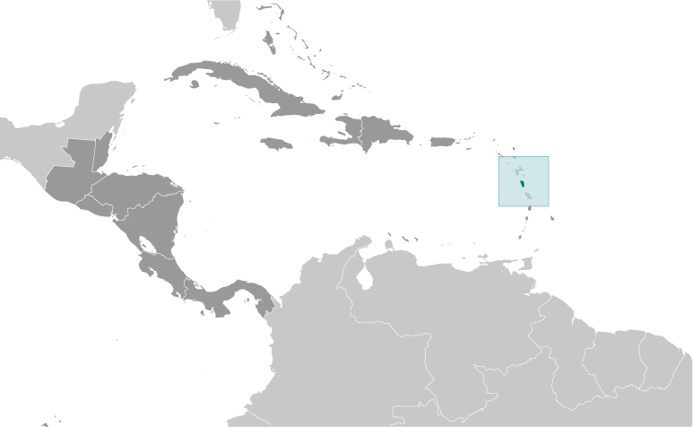
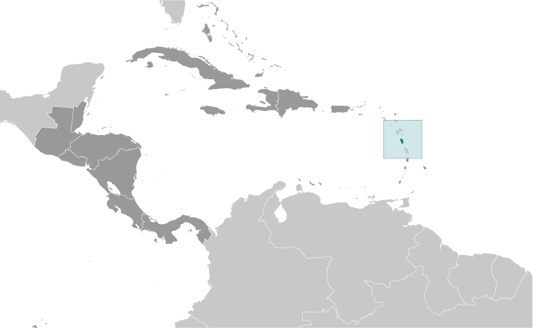

-
Introduction :: Dominica
-
Background:Dominica was the last of the Caribbean islands to be colonized by Europeans due chiefly to the fierce resistance of the native Caribs. France ceded possession to Great Britain in 1763, which colonized the island in 1805. In 1980, two years after independence, Dominica's fortunes improved when a corrupt and tyrannical administration was replaced by that of Mary Eugenia CHARLES, the first female prime minister in the Caribbean, who remained in office for 15 years. On 18 September 2017, Hurricane Maria passed over the island causing extensive damage to structures, roads, communications, and the power supply, and largely destroying critical agricultural areas.DOMINICA SUMMARY: PDF
-
Geography :: Dominica
-
Location:Caribbean, island between the Caribbean Sea and the North Atlantic Ocean, about halfway between Puerto Rico and Trinidad and TobagoGeographic coordinates:15 25 N, 61 20 WMap references:Central America and the CaribbeanArea:total: 751 sq kmland: 751 sq kmwater: NEGLcountry comparison to the world: 189Area - comparative:slightly more than four times the size of Washington, DCLand boundaries:0 kmCoastline:148 kmMaritime claims:territorial sea: 12 nmexclusive economic zone: 200 nmcontiguous zone: 24 nmClimate:tropical; moderated by northeast trade winds; heavy rainfallTerrain:rugged mountains of volcanic originElevation:0 m lowest point: Caribbean Sea1447 highest point: Morne DiablotinsNatural resources:timber, hydropower, arable landLand use:agricultural land: 34.7% (2011 est.)arable land: 8% (2011 est.) / permanent crops: 24% (2011 est.) / permanent pasture: 2.7% (2011 est.)forest: 59.2% (2011 est.)other: 6.1% (2011 est.)Irrigated land:NAPopulation distribution:population is mosly clustered along the coast, with roughly a third living in the parish of St. George, in or around the capital of Roseau; the volcanic interior is sparsely populatedNatural hazards:
flash floods are a constant threat; destructive hurricanes can be expected during the late summer months
volcanism: Dominica was the last island to be formed in the Caribbean some 26 million years ago, it lies in the middle of the volcanic island arc of the Lesser Antilles that extends from the island of Saba in the north to Grenada in the south; of the 16 volcanoes that make up this arc, five are located on Dominica, more than any other island in the Caribbean: Morne aux Diables (861 m), Morne Diablotins (1,430 m), Morne Trois Pitons (1,387 m), Watt Mountain (1,224 m), which last erupted in 1997, and Morne Plat Pays (940 m); the two best known volcanic features on Dominica, the Valley of Desolation and the Boiling Lake thermal areas, lie on the flanks of Watt Mountain and both are popular tourist destinations
Environment - current issues:water shortages a continuing concern; pollution from agrochemicals and from untreated sewage; forests endangered by the expansion of farming; soil erosion; pollution of the coastal zone by agricultural and industrial chemicals, and untreated sewageEnvironment - international agreements:party to: Biodiversity, Climate Change, Climate Change-Kyoto Protocol, Desertification, Endangered Species, Environmental Modification, Hazardous Wastes, Law of the Sea, Ozone Layer Protection, Ship Pollution, Whalingsigned, but not ratified: none of the selected agreementsGeography - note:known as "The Nature Island of the Caribbean" due to its spectacular, lush, and varied flora and fauna, which are protected by an extensive natural park system; the most mountainous of the Lesser Antilles, its volcanic peaks are cones of lava craters and include Boiling Lake, the second-largest, thermally active lake in the world -
People and Society :: Dominica
-
Population:74,027 (July 2018 est.)country comparison to the world: 202Nationality:noun: Dominican(s)adjective: DominicanEthnic groups:black 86.6%, mixed 9.1%, indigenous 2.9%, other 1.3%, unspecified 0.2% (2001 est.)Languages:English (official), French patoisReligions:Roman Catholic 61.4%, Protestant 28.6% (includes Evangelical 6.7%, Seventh Day Adventist 6.1%, Pentecostal 5.6%, Baptist 4.1%, Methodist 3.7%, Church of God 1.2%, other 1.2%), Rastafarian 1.3%, Jehovah's Witness 1.2%, other 0.3%, none 6.1%, unspecified 1.1% (2001 est.)Age structure:0-14 years: 21.62% (male 8,187 /female 7,815)15-24 years: 14.37% (male 5,473 /female 5,167)25-54 years: 42.59% (male 15,985 /female 15,541)55-64 years: 9.99% (male 3,927 /female 3,470)65 years and over: 11.43% (male 3,814 /female 4,648) (2018 est.)population pyramid:
 The World Factbook Field Image ModalCentral America :: Dominica Print
The World Factbook Field Image ModalCentral America :: Dominica Print Image DescriptionThis is the population pyramid for Dominica. A population pyramid illustrates the age and sex structure of a country's population and may provide insights about political and social stability, as well as economic development. The population is distributed along the horizontal axis, with males shown on the left and females on the right. The male and female populations are broken down into 5-year age groups represented as horizontal bars along the vertical axis, with the youngest age groups at the bottom and the oldest at the top. The shape of the population pyramid gradually evolves over time based on fertility, mortality, and international migration trends.
Image DescriptionThis is the population pyramid for Dominica. A population pyramid illustrates the age and sex structure of a country's population and may provide insights about political and social stability, as well as economic development. The population is distributed along the horizontal axis, with males shown on the left and females on the right. The male and female populations are broken down into 5-year age groups represented as horizontal bars along the vertical axis, with the youngest age groups at the bottom and the oldest at the top. The shape of the population pyramid gradually evolves over time based on fertility, mortality, and international migration trends.
For additional information, please see the entry for Population pyramid on the Definitions and Notes page under the References tab.Median age:total: 34 yearsmale: 33.5 yearsfemale: 34.5 years (2018 est.)country comparison to the world: 88Population growth rate:0.17% (2018 est.)country comparison to the world: 182Birth rate:15 births/1,000 population (2018 est.)country comparison to the world: 125Death rate:7.9 deaths/1,000 population (2018 est.)country comparison to the world: 92Net migration rate:-5.4 migrant(s)/1,000 population (2017 est.)country comparison to the world: 193Population distribution:population is mosly clustered along the coast, with roughly a third living in the parish of St. George, in or around the capital of Roseau; the volcanic interior is sparsely populatedUrbanization:urban population: 70.5% of total population (2018)rate of urbanization: 0.94% annual rate of change (2015-20 est.)Major urban areas - population:15,000 ROSEAU (capital) (2018)Sex ratio:at birth: 1.04 male(s)/female (2017 est.)0-14 years: 1.05 male(s)/female (2017 est.)15-24 years: 1.06 male(s)/female (2017 est.)25-54 years: 1.03 male(s)/female (2017 est.)55-64 years: 1.15 male(s)/female (2017 est.)65 years and over: 0.79 male(s)/female (2017 est.)total population: 1.02 male(s)/female (2017 est.)Infant mortality rate:total: 10.3 deaths/1,000 live births (2018 est.)male: 13.6 deaths/1,000 live births (2018 est.)female: 6.8 deaths/1,000 live births (2018 est.)country comparison to the world: 132Life expectancy at birth:total population: 77.4 years (2018 est.)male: 74.4 years (2018 est.)female: 80.5 years (2018 est.)country comparison to the world: 73Total fertility rate:2.03 children born/woman (2018 est.)country comparison to the world: 114Health expenditures:5.5% of GDP (2014)country comparison to the world: 126Hospital bed density:3.8 beds/1,000 population (2010)Drinking water source:improved: urban: 95.7% of populationunimproved: urban: 4.3% of populationSanitation facility access:improved: urban: 79.6% of population (2007 est.)rural: 84.3% of population (2007 est.)total: 81.1% of population (2007 est.)unimproved: urban: 20.4% of population (2007 est.)rural: 15.7% of population (2007 est.)total: 18.9% of population (2007 est.)HIV/AIDS - adult prevalence rate:NAHIV/AIDS - people living with HIV/AIDS:NAHIV/AIDS - deaths:NAMajor infectious diseases:note: active local transmission of Zika virus by Aedes species mosquitoes has been identified in this country (as of August 2016); it poses an important risk (a large number of cases possible) among US citizens if bitten by an infective mosquito; other less common ways to get Zika are through sex, via blood transfusion, or during pregnancy, in which the pregnant woman passes Zika virus to her fetus
Obesity - adult prevalence rate:27.9% (2016)country comparison to the world: 33Education expenditures:3.4% of GDP (2015)country comparison to the world: 133People - note:3,000-3,500 Kalinago (Carib) still living on Dominica are the only pre-Columbian population remaining in the Caribbean; only 70-100 may be "pure" Kalinago because of years of integration into the broader population -
Government :: Dominica
-
Country name:conventional long form: Commonwealth of Dominicaconventional short form: Dominicaetymology: the island was named by explorer Christopher COLUMBUS for the day of the week on which he spotted it, Sunday ("Domingo" in Latin), 3 November 1493Government type:parliamentary republicCapital:name: Roseaugeographic coordinates: 15 18 N, 61 24 Wtime difference: UTC-4 (1 hour ahead of Washington, DC, during Standard Time)Administrative divisions:10 parishes; Saint Andrew, Saint David, Saint George, Saint John, Saint Joseph, Saint Luke, Saint Mark, Saint Patrick, Saint Paul, Saint PeterIndependence:3 November 1978 (from the UK)National holiday:Independence Day, 3 November (1978)Constitution:history: previous 1967 (preindependence); latest presented 25 July 1978, entered into force 3 November 1978 (2018)amendments: proposed by the House of Assembly; passage of amendments to constitutional sections such as fundamental rights and freedoms, the government structure, and constitutional amendment procedures requires approval by three-fourths of the Assembly membership in the final reading of the amendment bill, approval by simple majority in a referendum, and assent to by the president; amended several times, last in 2015 (2018)Legal system:common law based on the English modelInternational law organization participation:accepts compulsory ICJ jurisdiction; accepts ICCt jurisdictionCitizenship:citizenship by birth: yescitizenship by descent only: yesdual citizenship recognized: yesresidency requirement for naturalization: 5 yearsSuffrage:18 years of age; universalJudicial branch:highest courts: the Eastern Caribbean Supreme Court (ECSC) is the superior court of the Organization of Eastern Caribbean States; the ECSC - headquartered on St. Lucia - consists of the Court of Appeal - headed by the chief justice and 4 judges - and the High Court with 18 judges; the Court of Appeal is itinerant, travelling to member states on a schedule to hear appeals from the High Court and subordinate courts; High Court judges reside at the member states with 2 in Dominica; note - in 2015, Dominica acceded to the Caribbean Court of Justice as final court of appeal, replacing that of the Judicial Commmitte of the Privy Council in Londonjudge selection and term of office: chief justice of Eastern Caribbean Supreme Court appointed by the Her Majesty, Queen ELIZABETH II; other justices and judges appointed by the Judicial and Legal Services Commission, an independent body of judicial officials; Court of Appeal justices appointed for life with mandatory retirement at age 65; High Court judges appointed for life with mandatory retirement at age 62subordinate courts: Court of Summary Jurisdiction; magistrates' courtsExecutive branch:chief of state: President Charles A. SAVARIN (since 2 October 2013)head of government: Prime Minister Roosevelt SKERRIT (since 8 January 2004)cabinet: Cabinet appointed by the president on the advice of the prime ministerelections/appointments: president nominated by the prime minister and leader of the opposition party and elected by the House of Assembly for a 5-year term (eligible for a second term); election last held on 1 October 2018 (next to be held in October 2023); prime minister appointed by the presidentelection results: Charles A. SAVARIN (DLP) reelected president unopposedLegislative branch:description: unicameral House of Assembly (32 seats; 21 representatives directly elected in single-seat constituencies by simple majority vote, 9 senators appointed by the Assembly, and 2 ex-officio members - the House Speaker and the Clerk of the House; members serve 5-year terms)elections: last held on 8 December 2014 (next to be held in 2019); note - tradition dictates that the election is held within 5 years of the last election, but technically it is 5 years from the first seating of parliament plus a 90-day grace periodelection results: percent of vote by party - DLP 57.0%, UWP 42.9%, other 0.1%; seats by party - DLP 15, UWP 6Political parties and leaders:Dominica Freedom Party or DFP [Judith PESTAINA]
Dominica Labor Party or DLP [Roosevelt SKERRIT]
Dominica United Workers Party or UWP [Lennox LINTON]International organization participation:ACP, AOSIS, C, Caricom, CD, CDB, CELAC, Commonwealth of Nations, ECCU, FAO, G-77, IAEA, IBRD, ICCt, ICRM, IDA, IFAD, IFC, IFRCS, ILO, IMF, IMO, Interpol, IOC, ISO (correspondent), ITU, ITUC (NGOs), MIGA, NAM, OAS, OECS, OIF, OPANAL, OPCW, Petrocaribe, UN, UNCTAD, UNESCO, UNIDO, UPU, WFTU, WHO, WIPO, WMO, WTODiplomatic representation in the US:chief of mission: Ambassador Vince HENDERSON (since 18 January 2017)chancery: 3216 New Mexico Avenue NW, Washington, DC 20016telephone: [1] (202) 364-6781FAX: [1] (202) 364-6791consulate(s) general: New YorkDiplomatic representation from the US:the US does not have an embassy in Dominica; the US Ambassador to Barbados is accredited to DominicaFlag description:green with a centered cross of three equal bands - the vertical part is yellow (hoist side), black, and white and the horizontal part is yellow (top), black, and white; superimposed in the center of the cross is a red disk bearing a Sisserou parrot, unique to Dominica, encircled by 10 green, five-pointed stars edged in yellow; the 10 stars represent the 10 administrative divisions (parishes); green symbolizes the island's lush vegetation; the triple-colored cross represents the Christian Trinity; the yellow color denotes sunshine, the main agricultural products (citrus and bananas), and the native Carib Indians; black is for the rich soil and the African heritage of most citizens; white signifies rivers, waterfalls, and the purity of aspirations; the red disc stands for social justiceNational symbol(s):Sisserou parrot, Carib Wood flower; national colors: green, yellow, black, white, redNational anthem:name: Isle of Beautylyrics/music: Wilfred Oscar Morgan POND/Lemuel McPherson CHRISTIANnote: adopted 1967
-
Economy :: Dominica
-
Economy - overview:The Dominican economy was dependent on agriculture - primarily bananas - in years past, but increasingly has been driven by tourism, as the government seeks to promote Dominica as an "ecotourism" destination. However, Hurricane Maria, which passed through the island in September 2017, destroyed much of the country’s agricultural sector and caused damage to all of the country’s transportation and physical infrastructure. Before Hurricane Maria, the government had attempted to foster an offshore financial industry and planned to sign agreements with the private sector to develop geothermal energy resources. At a time when government finances are fragile, the government’s focus has been to get the country back in shape to service cruise ships. The economy contracted in 2015 and recovered to positive growth in 2016 due to a recovery of agriculture and tourism. Dominica suffers from high debt levels, which increased from 67% of GDP in 2010 to 77% in 2016. Dominica is one of five countries in the East Caribbean that have citizenship by investment programs whereby foreigners can obtain passports for a fee and revenue from this contribute to government budgets.GDP (purchasing power parity):$783 million (2017 est.)$821.5 million (2016 est.)$800.4 million (2015 est.)
note: data are in 2017 dollars
country comparison to the world: 206GDP (official exchange rate):$557 million (2017 est.) (2017 est.)GDP - real growth rate:-4.7% (2017 est.)2.6% (2016 est.)-3.7% (2015 est.)country comparison to the world: 217GDP - per capita (PPP):$11,000 (2017 est.)$11,600 (2016 est.)$11,300 (2015 est.)note: data are in 2017 dollars
country comparison to the world: 136Gross national saving:10.8% of GDP (2017 est.)20% of GDP (2016 est.)14.3% of GDP (2015 est.)country comparison to the world: 160GDP - composition, by end use:household consumption: 60.6% (2017 est.)government consumption: 26.2% (2017 est.)investment in fixed capital: 21.5% (2017 est.)investment in inventories: 0% (2017 est.)exports of goods and services: 54.4% (2017 est.)imports of goods and services: -62.7% (2017 est.)GDP - composition, by sector of origin:agriculture: 22.3% (2017 est.)industry: 12.6% (2017 est.)services: 65.1% (2017 est.)Agriculture - products:bananas, citrus, mangos, root crops, coconuts, cocoanote: forest and fishery potential not exploited
Industries:soap, coconut oil, tourism, copra, furniture, cement blocks, shoesIndustrial production growth rate:-13% (2017 est.)country comparison to the world: 199Labor force:25,000 (2000 est.)country comparison to the world: 208Labor force - by occupation:agriculture: 40%industry: 32%services: 28% (2002 est.)Unemployment rate:23% (2000 est.)country comparison to the world: 192Population below poverty line:29% (2009 est.)Budget:revenues: 227.8 million (2017 est.)expenditures: 260.4 million (2017 est.)Taxes and other revenues:40.9% (of GDP) (2017 est.)country comparison to the world: 34Budget surplus (+) or deficit (-):-5.9% (of GDP) (2017 est.)country comparison to the world: 181Public debt:82.7% of GDP (2017 est.)71.7% of GDP (2016 est.)country comparison to the world: 33Fiscal year:1 July - 30 JuneInflation rate (consumer prices):0.6% (2017 est.)0% (2016 est.)country comparison to the world: 32Central bank discount rate:6.5% (31 December 2010)6.5% (31 December 2009)country comparison to the world: 58Commercial bank prime lending rate:8.08% (31 December 2017 est.)8.28% (31 December 2016 est.)country comparison to the world: 108Stock of narrow money:$113.2 million (31 December 2017 est.)$112 million (31 December 2016 est.)country comparison to the world: 188Stock of broad money:$113.2 million (31 December 2017 est.)$112 million (31 December 2016 est.)country comparison to the world: 193Stock of domestic credit:$182.2 million (31 December 2017 est.)$195.9 million (31 December 2016 est.)country comparison to the world: 185Current account balance:-$70 million (2017 est.)$5 million (2016 est.)country comparison to the world: 82Exports:$28 million (2017 est.)$43.7 million (2016 est.)country comparison to the world: 206Exports - partners:Saudi Arabia 42.6%, Trinidad and Tobago 9.3%, Jamaica 8.1%, St. Kitts and Nevis 7.1%, Guyana 6.7% (2017)Exports - commodities:bananas, soap, bay oil, vegetables, grapefruit, orangesImports:$206.6 million (2017 est.)$188.4 million (2016 est.)country comparison to the world: 209Imports - commodities:manufactured goods, machinery and equipment, food, chemicalsImports - partners:US 61.3%, Trinidad and Tobago 9.8% (2017)Reserves of foreign exchange and gold:$212.3 million (31 December 2017 est.)$221.9 million (31 December 2016 est.)country comparison to the world: 172Debt - external:$280.4 million (31 December 2017 est.)$314.2 million (31 December 2015 est.)country comparison to the world: 186Stock of direct foreign investment - at home:$372.7 million (31 December 2017 est.)country comparison to the world: 132Stock of direct foreign investment - abroad:$220,000 (31 December 2017 est.)country comparison to the world: 119Exchange rates:East Caribbean dollars (XCD) per US dollar -2.7 (2017 est.)2.7 (2016 est.)2.7 (2015 est.)2.7 (2014 est.)2.7 (2013 est.) -
Energy :: Dominica
-
Electricity access:population without electricity: 5,900 (2012)electrification - total population: 93% (2012)electrification - urban areas: 99% (2012)electrification - rural areas: 80% (2012)Electricity - production:111.4 million kWh (2016 est.)country comparison to the world: 199Electricity - consumption:103.6 million kWh (2016 est.)country comparison to the world: 201Electricity - exports:0 kWh (2016 est.)country comparison to the world: 128Electricity - imports:0 kWh (2016 est.)country comparison to the world: 142Electricity - installed generating capacity:27,800 kW (2016 est.)country comparison to the world: 201Electricity - from fossil fuels:72% of total installed capacity (2016 est.)country comparison to the world: 102Electricity - from nuclear fuels:0% of total installed capacity (2017 est.)country comparison to the world: 79Electricity - from hydroelectric plants:25% of total installed capacity (2017 est.)country comparison to the world: 76Electricity - from other renewable sources:3% of total installed capacity (2017 est.)country comparison to the world: 124Crude oil - production:0 bbl/day (2017 est.)country comparison to the world: 127Crude oil - exports:0 bbl/day (2015 est.)country comparison to the world: 115Crude oil - imports:0 bbl/day (2015 est.)country comparison to the world: 118Crude oil - proved reserves:0 bbl (1 January 2018 est.)country comparison to the world: 124Refined petroleum products - production:0 bbl/day (2015 est.)country comparison to the world: 137Refined petroleum products - consumption:1,300 bbl/day (2016 est.)country comparison to the world: 203Refined petroleum products - exports:0 bbl/day (2015 est.)country comparison to the world: 148Refined petroleum products - imports:1,237 bbl/day (2015 est.)country comparison to the world: 199Natural gas - production:0 cu m (2017 est.)country comparison to the world: 124Natural gas - consumption:0 cu m (2017 est.)country comparison to the world: 140Natural gas - exports:0 cu m (2017 est.)country comparison to the world: 95Natural gas - imports:0 cu m (2017 est.)country comparison to the world: 117Natural gas - proved reserves:0 cu m (1 January 2014 est.)country comparison to the world: 128Carbon dioxide emissions from consumption of energy:199,600 Mt (2017 est.)country comparison to the world: 200
-
Communications :: Dominica
-
Telephones - fixed lines:total subscriptions: 13,328 (July 2016 est.)subscriptions per 100 inhabitants: 18 (July 2016 est.)country comparison to the world: 190Telephones - mobile cellular:total subscriptions: 78,444 (July 2016 est.)subscriptions per 100 inhabitants: 106 (July 2016 est.)country comparison to the world: 195Telephone system:general assessment: fully automatic network; there are multiple operators licensed to provide services, most of them are small and localised; the telecom sector across the Caribbean region remains one of the key growth areas (2017)domestic: fixed-line connections continued to decline slowly with the two active operators providing about 18 fixed-line connections per 100 persons; subscribership among the three mobile-cellular providers is about 106 per 100 persons (2017)international: country code - 1-767; landing points for the East Caribbean Fiber Optic System (ECFS) and the Global Caribbean Network (GCN) submarine cables providing connectivity to other islands in the eastern Caribbean extending from the British Virgin Islands to Trinidad; microwave radio relay and SHF radiotelephone links to Martinique and Guadeloupe; VHF and UHF radiotelephone links to Saint Lucia (2016)Broadcast media:no terrestrial TV service available; subscription cable TV provider offers some locally produced programming plus channels from the US, Latin America, and the Caribbean; state-operated radio broadcasts on 6 stations; privately owned radio broadcasts on about 15 stations (2007)Internet country code:.dmInternet users:total: 49,439 (July 2016 est.)percent of population: 67% (July 2016 est.)country comparison to the world: 195Broadband - fixed subscriptions:total: 15,487 (2017 est.)subscriptions per 100 inhabitants: 21 (2017 est.)country comparison to the world: 160
-
Transportation :: Dominica
-
National air transport system:number of registered air carriers: 0 (2015)inventory of registered aircraft operated by air carriers: 0 (2015)annual passenger traffic on registered air carriers: 0 (2015)annual freight traffic on registered air carriers: 0 mt-km (2015)Civil aircraft registration country code prefix:J7 (2016)Airports:2 (2013)country comparison to the world: 199Airports - with paved runways:total: 2 (2017)1,524 to 2,437 m: 1 (2017)914 to 1,523 m: 1 (2017)Roadways:total: 1,512 km (2010)paved: 762 km (2010)unpaved: 750 km (2010)country comparison to the world: 177Merchant marine:total: 76 (2017)by type: general cargo 24, oil tanker 15, other 37 (2017)country comparison to the world: 101Ports and terminals:major seaport(s): Portsmouth, Roseau
-
Military and Security :: Dominica
-
Military branches:no regular military forces; Commonwealth of Dominica Police Force (includes Coast Guard) (2012)
-
Transnational Issues :: Dominica
-
Disputes - international:Dominica is the only Caribbean state to challenge Venezuela's sovereignty claim over Aves Island and joins the other island nations in challenging whether the feature sustains human habitation, a criterion under the UN Convention on the Law of the Sea, which permits Venezuela to extend its EEZ and continental shelf claims over a large portion of the eastern Caribbean SeaIllicit drugs:transshipment point for narcotics bound for the US and Europe; minor cannabis producer
Central America ::
Dominica